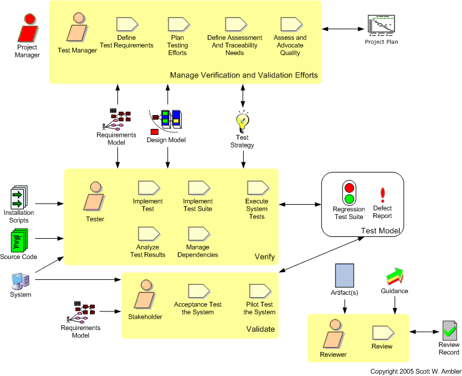
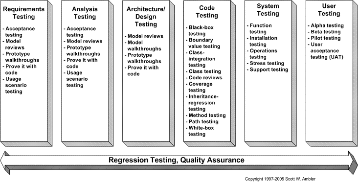

The Test Discipline
| Home | Phases | Disciplines | Milestones | Roles | Deliverables | Guidance | Help |
|
|
The Test Discipline |
|
||||||||
|
||||||||||
The goal of this discipline is to perform an objective evaluation to ensure quality. This includes finding defects, validating that the system works as designed, and verifying that the requirements are met.

Figure 1. The FLOOT lifecycle.

| Phase | Activities |
| Inception | Initial test planning. Should be very high-level at first.
The main goal is to identify how much testing you'll need to do, who
will be responsible for it, the level of stakeholder participation
required, and the types of tools and environments required (an
Environment discipline issue). Review initial project management work products. Towards the end of this phase the initial project plan, vision, and so on should be available. These work products are often reviewed, typically as part of the milestone review, by key project stakeholders. Review initial models. A high-level, initial requirements model, and perhaps even an initial architecture model, should be produced by your modeling efforts. You may choose to review this work with stakeholders, particularly if you want to communicate the scope and potential architecture of your system to a wider range of people than were actively involved in the development of the models. |
| Elaboration | Validate the architecture. You should take a
test-driven
development (TDD) approach to building your technical prototype
which proves the architecture of your system. An important aspect
of the milestone review is the
validation of the architecture, which might be something as simple as
presenting an overview of the architecture and the results of your
prototyping efforts to your stakeholders. Or, it might be
something as complex as a
formal
review of all your work during this phase.
Evolve your test model. Your team will develop a regression test suite, comprised of unit tests from your test driven development (TDD) efforts in implementation, your acceptance tests from your modeling efforts, and your system tests (e.g. for function, integration, load, ... testing). You may also need to maintain traceability between your requirements, tests, and source code to show how you have validated the implemented requirements. At this point your defect reports would simply be the output of your test suite. |
| Construction | Test the software. In addition to unit testing by
developers you need to do installation testing of your
deployment scripts, system testing efforts
such as load/stress testing and function testing, and user acceptance
testing. Because your software evolves throughout your projects so
will your test suite. The more often you promote your code into a
pre-production test environment, and then test it appropriately, the
better your Transition phase testing activities will be. Evolve your test model. See above. |
| Transition | Validate the system. Your focus will be on "testing in the large"
activities such as system testing, integration testing, acceptance
testing, and pilot/beta testing. Your goal is to fully test the
system within your pre-production testing environment(s). Validate the documentation. Your system documentation (system overview, user, support, and operations documentation), and your training materials will need to be validated. This can be done in reviews or better yet as part of your pilot/beta testing. Finalize your test model. You will continue to run your regression test suite, and update it as needed, until your system is ready to be deployed into production. Your defect reporting will likely become more formal, the found defects will likely be recorded, along with appropriate details, so that developers can implement fixes. |
 |
Page last updated: May 13, 2006 This page is tailored with permission from Ambysoft Inc.'s Agile UP Product Original page is Copyright © 2005-2006 Ambysoft Inc. |